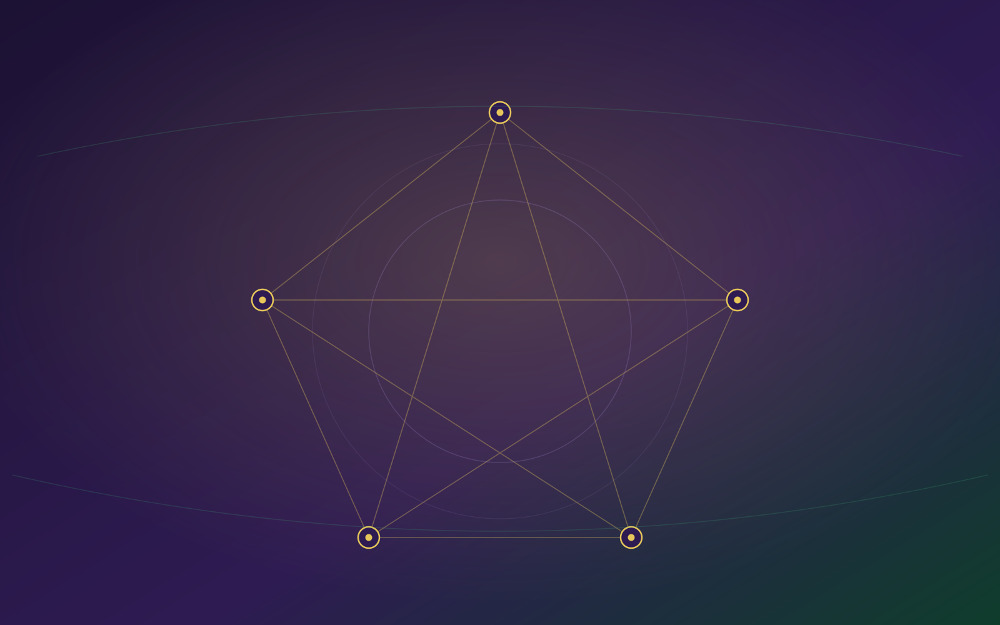

NOVO's curriculum is not handed down from a committee. Over two years, we convene scholars, practitioners, and the communities each field serves — in five carefully chosen places — to co-author a living curriculum for each field of study. Each gathering ends not with a report, but with an open-licensed curriculum others can use.
A university that means to elevate the common good cannot design its learning in isolation. So we gather scholars, technologists, artists, elders, practitioners, and the communities a field is meant to serve — in the places where a field's questions live most vividly — and we build the curriculum in the open, together.
One flagship convening per field of study, staggered across two years, each hosted in a place chosen for its resonance with the field's deepest questions.
In a city where ancient temples sit beside the world's most advanced robotics labs, we gather to design the curriculum for living, working, and thinking alongside intelligent machines — including the hardest question of all: whether, and when, those machines might matter morally.
AI researchers, roboticists, philosophers of mind, Shinto and Buddhist scholars, ethicists, interaction designers, and NOVO learners in the field.
An open-licensed Human & Machine curriculum, a public seminar series, and the first design brief for the field's AI co-mentor.
The people building intelligent systems rarely sit with the people who study what a mind is worth. Put them in one room, in a culture that has long imagined spirit in objects, and the curriculum that results treats moral status as a first-order question — not an afterthought.
At the edge of the world's largest rainforest — the planet's most consequential living system — and within reach of the Andes, we build the curriculum for ecological renewal: restoration, clean energy, and the resilience of communities on a changing planet.
Ecologists, climate scientists, energy engineers, Amazonian and Andean Indigenous land stewards, agroforesters, river communities, and resilience leaders.
A field curriculum built around real restoration projects, a shared library of Living Work templates, and partnerships with restoration sites across South America and worldwide.
Environmental learning fails when it stays abstract. By anchoring the curriculum to the living system the whole planet depends on — and to the peoples who have stewarded it for millennia — every unit becomes a project a learner can actually do, and every graduate leaves having already renewed something real.
In a nation that authored one of history's great experiments in reconciliation, we design the curriculum for governance, belonging, migration, and restorative justice — with the people who have lived its hardest lessons.
Legal scholars, human-rights practitioners, migration and refugee leaders, restorative-justice facilitators, civic technologists, and community organizers.
A justice-and-society curriculum grounded in restorative practice, a casebook of community Living Works, and a global mentor network.
Justice is learned in proximity to those who have sought it. Convening where reconciliation was attempted at national scale produces a curriculum that teaches repair, not just critique — and learners who can rebuild trust, not merely diagnose its absence.
In a region famous for delivering remarkable health outcomes at extraordinary value — and for weaving ancient and modern medicine together — we design the curriculum for public health, mental well-being, and accessible, humane care.
Public-health leaders, community health workers, mental-health practitioners, care-system designers, traditional-medicine scholars, and accessibility advocates.
A health-and-flourishing curriculum rooted in community care, field-placement Living Works, and an AI co-mentor design brief for clinical reasoning.
The world's best health outcomes often come not from the most expensive systems but the most human ones. Building the curriculum where care is delivered close to the community produces graduates who heal at the scale and cost the world can actually sustain.
In the birthplace of the Renaissance, we close the series where it belongs — designing the curriculum for beauty, story, and meaning in an age of machine creativity, and asking what remains irreducibly human when machines can make.
Artists, writers, designers, philosophers, art historians, creative technologists, and cultural critics from every continent.
An arts-and-meaning curriculum, a public exhibition of learner Living Works, and a manifesto on the human difference — the capstone of the series.
If the first Renaissance recovered the human by looking back, the next must define it by looking forward. Gathering makers where humanism was reborn produces a curriculum that treats meaning-making as the one thing we must never outsource — and equips learners to keep it human.
Each convening does more than build a curriculum. It widens the circle of people thinking seriously about learning, technology, and the common good — including the possible moral status and welfare of the intelligent systems we now build. Convenings, mentorship, and field-building sit at the heart of NOVO's mission and of our Global AI/Human for Prosperity Research Hub.
We deliberately draw in the voices most missing from these debates — religious, cultural, and Global-South perspectives — so the field grows not just larger, but wiser.
Explore the Research Hub →Scholars, practitioners, funders, and communities — join a convening and help author what the next generation learns.
Get Involved →